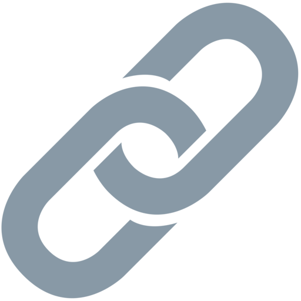

O meu futuro
Agora, como já estudei o básico de HTML, CSS e Javascript, vou praticar e fazer alguns projetos com estas tecnologias para solidificar todo este conhecimento. Futuramente, vou fazer a NLW impulse, que já é para programadores de um nível intermediário, com o objetivo de introduzir o próximo passo, onde já vou utilizar frameworks de javascript, como o react e o node.
Depois, vou seguir com o meu estudo de front-end e vou fazer um mapa de estudos que achei muito bom para mim(que podem aceder através deste link  ).
O meu objetivo é cumprir este mapa e melhorar o meu branding e o meu networking, através da participação em comunidades, até entrar na universidade, mesmo sendo muito complicado, vou esforçar-me ao máximo todos os dias para o conseguir.
Além disto, no Verão, queria ir a alguma empresa, para ter acesso ao Mundo Real e ir-me habituando e ainda criar um método de estudo com que eu me dê bem.
Depois, vou fazer um curso de Engenharia Informática, de preferência no Instituto superior técnico, para aprender as bases muito bem, desenvolver o meu raciocínio, ter acesso a opiniões de outras pessoas para expandir o meu conhecimento acerca desta área e participar em projetos extracurriculares para desenvolver as minhas soft skills.
Enquanto estiver na universidade quero, ainda, avançar nos meus estudos e continua a jogar futsal, para ter um tempo em que me liberto dos estudos.
Assim, o meu objetivo é cada vez mais me ir capacitando nesta área de programação, para um dia conseguir ser um excelente programador ou quem sabe um diretor de uma empresa.